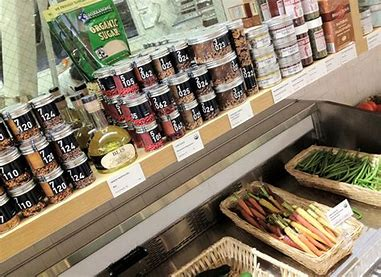
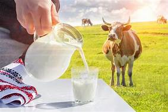
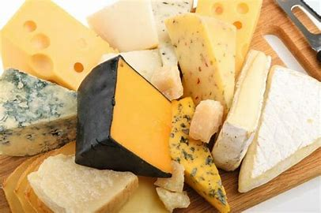
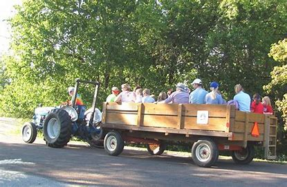
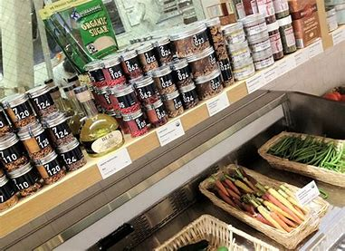
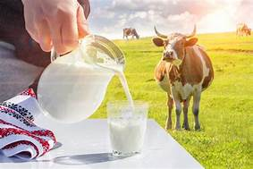
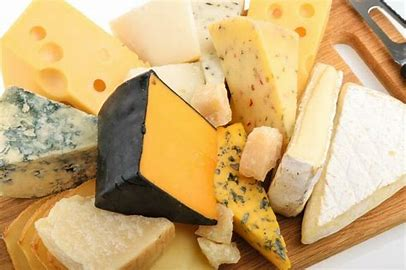
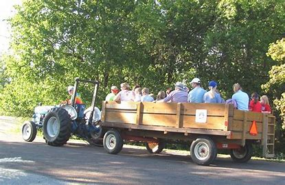

Welcome
hayrides Acivities

pumpkin picking Activities

a corn maze Activities
Welcome to our farm shop website where you can find all the information that you need about our products. The farm shop has a wide range of fresh product and products, from jams and preserves to eggs and bacon. We have free-range eggs that are laid by the chickens on our farm. Our pork is reared in the fields around our house, giving it a distinctive flavour. Choose from award winning pies with fillings such as: apricot or blackberry; hand-made chocolates; local honey and marmalade; homemade breads and cakes; locally sourced fruit juices, wines, beers and ciders. We also sell fresh vegetables grown in our garden!